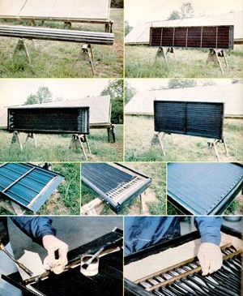

Solar technology is, at long last, beginning to have the opportunity to help alleviate our country's present energy predicament, and most experts acknowledge that, of all the sun-power applications currently in use, water heating systems offer the quickest return on the dollars invested. In fact, depending upon the equipment selected and the labor involved in installing such devices, domestic solar water heaters can pay back every penny laid out for their purchase (in the form of the savings that result from not using conventional energy) in as little as two years.
Consequently, MOTHER has been keeping an eye on the solar collector market, and-in particular-we've been pleased to see a number of sun-power kits appear. After all, considering that the cost of labor usually constitutes at least half the purchase price of most manufactured goods, many folks would be tickled to supply some of that valuable commodity themselves . . . and pocket the difference.
Of course, when faced with the possibility of choosing among the collector kits available, the potential purchaser has a number of questions to consider, such as: Just how difficult are they to put together? How well do they actually work? Are the finished do-it-yourself water heaters as good as factory-assembled items? Are they more efficient (and/or easier to build) than are purely homemade jobs (such as MOTHER's In-Line Collector, featured in issue 67) . . . and, if so, are they enough better to justify the additional cost? For that matter, is any one company's package significantly superior to another's?
Since we thought you'd appreciate having answers to such questions, we acquired a representative sampling of the assemble-them-oneself solar boxes, with the idea of seeing how they actually do stack up. In this issue we're going to tell you about the cost of-and the effort needed to put together-several different kits (and review the construction of our homemade in-line collector), then go on to preview our testing procedure . . . the results of which will be reported in detail in MOTHER NO. 71.
Solar Usage Now's BTU Bucket is-by virtue of its fiberglass box and aluminum absorber plate-by far the lightest of the collectors we put together. And with 14.2 square feet of glazing, the $99 package is also the least expensive kit . . . at about 1$8.00 per square foot (including the added cost for insulation).
Assembling the collector is a relatively straightforward operation, too ... which is fortunate, since SUN included very little in the way of directions. There are, however, a couple of construction procedures that could cause an inexperienced individual some trouble.
Because the box is just 22-1/2-inch wide, standard batt insulation must be cut down to fit within the frame. Then holes for the headers must be drilled in the box. We sandwiched the fragile fiberglass sides with sections of wood prior to drilling, to prevent the material from splintering. With that done, the headers and absorber plates/tubes (they're one piece, and are keyed to fit together) can be slipped into the frame and attached to each other.
Only after the pieces are placed in the box can the four tubes be soldered into the headers at each end, since the large copper pipes must pass through the holes in the walls of the box for assembly. This fact necessitates the slightly tricky job of sweating the joints together without singeing the insulation that lies directly below. We plumbed our Bucket according to convention . . . with the cold entrance on one side and the hot on the other. The far end of each header was then trimmed and capped so that only one hole had to be drilled in each side of the frame. (An unwitting first-timer might assume that both ends of the headers need to penetrate the enclosure, and thus do a little superfluous work.)
The remainder of the assembly procedure-which took about eight hours all together-was easy. Extruded rubber molding is supplied with the kit, to seal the top of the fiberglass-reinforced plastic glazing . . . and enough silicone caulk and rubber seals are provided to make the unit tight. Three dowels were also included . . . which are used to bridge the width of the box in order to support the cover.
It's important to stress from the start that Bio-Energy Systems' collector is not a kit. SolaRoll dealers around the country sell both complete aluminum-framed box collectors and components and services for building solar systems on site, as well as the SolaRoll supplies that an individual would need to build his or her own unit. Hence this entrant in MOM's comparison is actually a "from scratch" solar heater that's built using proven, easy-to-work-with materials.
The Bio-Energy Systems product line is based on an EPDM (ethylenepropylenediene-monomer) rubber mat that's 4-3/8-inch wide and has six fluid-carrying passages formed into the material during the extrusion process. (Bio-Energy specifically states that propylene or ethylene glycol should be run in its collectors, rather than water. We intend to violate this recommendation for the purposes of testing only. The rubber formula that's used by the manufacturer is not for potable water . . . and a heat exchanger must always be employed when Sola-Roll is used for domestic applications.)
The Sola-Roll package includes rubber framing strips, and that material manages to hold and seal the glazing . . . protect the collector box ... and serve as flashing around the edges, all in a single step. Because our own unit isn't yet mounted on a rooftop (where the whole thing would normally be put together), the framing strip hangs down from the box.
We first built a frame from 2 X 4's, 1/2-inch plywood, and a sheet of 1-inch polystyrene insulation. The SolaRoll absorber mat was then simply glued directly to the headboard. Both hot and cold headers were run through 7/8-inch holes drilled in the same end of the box, since SolaRoll can be laid out along the length of the collector, bent 180°, and returned to its beginning for convenient plumbing.
Each SolaRoll tube is trimmed of its webbing ... has a Teflon "jam sleeve" slipped inside it ... and is pressed into prepared holes in the 3/4-inch headers. After going through the somewhat painful task of hand inserting each of the 36 tubes (in a counterflow pattern), we learned that Bio-Energy has a tool to make the task easier.
It took about 12 working hours to build the SolaRoll collector, but the two fellows who did the job felt that they could improve their performance considerably the second time through. They claim thatwhile the SolaRoll components seem a bit foreign at first-the process can actually go quite quickly once one gets used to it.
When the cost of lumber, insulation, and glazing is added to that of the SolaRoll parts, an owner-constructed Bio-Energy collector similar to ours will run about $14 per square foot. It should be pointed out, however, that the square footage expenses drop somewhat when the material is used for larger projects (which many folks, no doubt, would be interested in).
The Harrisville, Rhode Island firm's collector was by far the easiest unit to put together. All the parts had been carefully made to fit (in fact, it was almost as if the device had been preassembled and then taken apart for shipment!), and the internal fluid-carrying components were presoldered. Two of MOTHER's researchers easily bolted the Suntree unit together in an hour . . . and they dawdled a bit while admiring the neatly finished joints.
The absorber plate consists of 17 copper tubes that are covered with thin copper sheeting . . . resulting in the availability of all the potential absorber surface offered by the 3' X 6' box. Both the tube/header connection and the joints between the pipes and the absorber sheet had been soldered by a high-temperature process . . . as opposed to the less effective, more common 50-50 solder sweating.
Like the other manufacturers, Suntree chose to use fiberglass-reinforced plastic glazing, and a single wooden bridge is built in to support the flexible material. Precut aluminum flashing (and a tube of silicone sealant) was supplied to hold the clear cover to the frame.
The current price for the collector is $250. . . hence the square-foot price works out to a little more than $14.
The construction of single-loop collectors was detailed in Mother's In-line Collector, issue 67. To summarize that report, the devices we've built consist of 1/2-inch hard copper tubing with sections of aluminum printing plate serving as absorber fins. The base of the collector is a 10 feet-long 1 X 12, and the board is covered with a sheet of 1-inch thick foil-backed polyurethane insulation. Rippled end-pieces are attached (with appropriate openings for the tubes to pass through) . . . and corrugated fiberglass is then wrapped around the front.
The first in-line collector coming off a home assembly line is likely to take the average person at least a day to put together (one has to get the hang of pressing the groove in the fins and sweating the aluminum to the tubes). But we've found that a bit of practice makes it possible to build one from scratch in little more than a morning. The materials cost-depending upon prices in your area-should total about $35, which works out to less than $4.00 per square foot . . . and all the needed components should be readily available at any good lumberyard.
For our upcoming comparison, we're going to use two of the homemade in-tine units, plumbed parallel, in order to keep the sizes of the various collectors relatively constant.
In our next issue, we'll present the results of running the four do-them-yourself solar water heaters against one another. And we'll include the performance figures for a quality preassembled collector to provide a further basis for comparison. We've chosen a Solar King panel as an example of a wellbuilt, carefully flowed device, and we believe that its "black chrome" absorber covering (as opposed to the painted surfaces in the other contestants) should make it representative of the state of the art.
The six collectors will be mounted on a frame that holds them at 45° and faces due south. Each of the five systems (the inlines will be paired) will be separately plumbed into its own March magnetic drive pump (model 809HS) ... and water will be distributed from (and returned to) a fivegallon bucket positioned above the heater. To compensate for the different absorber surface areas, an appropriate amount of water will be placed in each collector's bucket. (Though the thermal losses through the buckets and hose will be beyond normal, they'll be about equal and therefore should not affect the comparison significantly.)
Temperature will be measured at the inlet and outlet of each panel (to record what is called delta-T, or temperature rise across the collector), and we'll also slip one of the calibrated thermistors (electronic probes hooked to a central panel) into each of the buckets . . . to observe the overall rate at which the water warms.
Of course, after several days of testing-both to try different flow rates and to look for repeatable results-we still may not have a definitive answer to the question, "Which one heats best?" Our thermistors are accurate only to plus or minus 3 percent, and if the collectors' results come that close (as they may very well do), we will merely know that-in performance-they're too similar to choose from. At that point, price and ease of assembly-as described in this article-might become the determining factors. At any rate, the outcome should be interesting ... don't miss it!
THE BTU BUCKET: $99 (F.O.B. Bascom)
Company information not available. (2009)
SOLAROLL
http://www.solaroll.com/
SUNTREE SOLAR COMPANY
Company information not available. (2009)
SOLAR KING
American Solar King
http://www.corporationwiki.com/Texas/Waco/american-solar-king-corporation-4549674.aspx
|
 Staff Photo Top Left: Mother's in-line collector. Top right: The BTU Bucket without glazing. Center left: A three-pass version of a SolaRoll unit. Center right: Suntree's kit collector has 17 tubes. Bottom left: Suntree's collector box is now made of aluminum. Bottom middle: The BTU Bucket tubes must be joined to its headers with solder. Bottom right: SolaRoll's 36 fluid-carrying passages are seaded to the headers by pressing the rubber tubes - with Teflon jam sleeves inside - into preformed openings. |
|
|